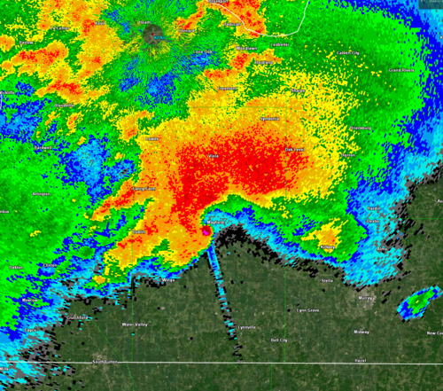
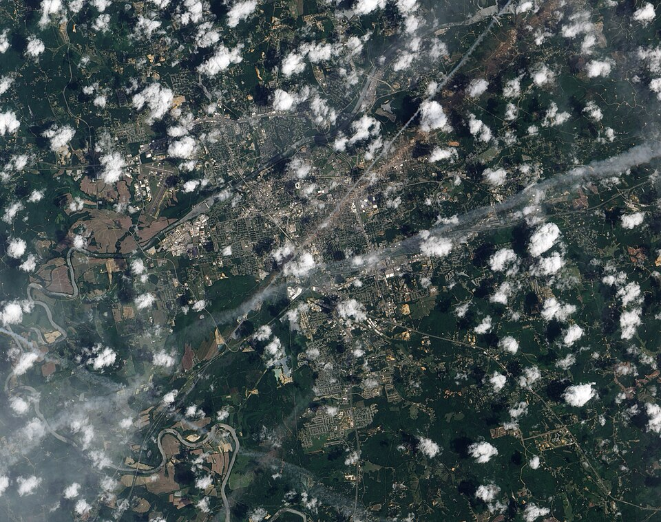

A tornado is a rapidly rotating column of air, in contact with the ground, that is pendant from or beneath a cumuliform cloud and is often (but not always) visible as a condensation funnel or a debris cloud. Tornadoes are the most intense atmospheric vortices on Earth at the surface: mobile Doppler radars have measured winds of about 135 m/s (≈ 300 mph) within a few tens of metres of the ground, and the pressure deficit in the core of a violent tornado can reach roughly 50–100 hPa over a horizontal distance of a few hundred metres. Yet tornadoes are small (typical damage widths of tens to hundreds of metres), short-lived (most last minutes), and embedded within parent storms whose scale is one to two orders of magnitude larger. This mismatch of scales is the central difficulty of tornado science, forecasting and warning.
The United States records about 1,200 tornadoes per year, more than any other country, but tornadoes occur on every continent except Antarctica. Significant tornado activity is also found in Canada, Europe, the Río de la Plata basin of South America, South Africa, Australia, Japan, China and — with exceptional lethality — Bangladesh and eastern India. In the USA tornadoes have killed on average roughly 70 people per year in recent decades, with very large interannual variability (about 550 deaths in 2011, fewer than 20 in some quiet years). Insured losses from severe convective storms, of which tornadoes are a major part, now regularly exceed those from tropical cyclones in many years.
This course treats tornadoes at the level of an atmospheric science graduate programme or a professional working in forecasting, emergency management or wind engineering. We begin with the thermodynamic and kinematic environment of deep convection, then build up the vorticity dynamics of supercells, the still-unsettled problem of tornadogenesis, the fluid mechanics of the tornado vortex itself, and the ways tornadoes are observed, rated, forecast and warned for. We close with climatology, trends, vulnerability and engineering, and then examine a set of historical cases that each changed scientific understanding or practice.
In this course, you will:
- 1.Quantify convective instability with CAPE, CIN and the lifted index, and relate buoyancy and shear to storm type
- 2.Read hodographs, compute storm motion and storm-relative helicity, and explain why streamwise vorticity favours rotating updrafts
- 3.Derive the tilting and stretching terms of the vorticity equation and use them to explain mesocyclone formation and storm splitting
- 4.Evaluate competing explanations of tornadogenesis and identify the main open questions
- 5.Distinguish supercell from non-supercell tornadoes, including landspouts, waterspouts and QLCS tornadoes
- 6.Describe tornado vortex structure with Rankine and Burgers–Rott models, cyclostrophic balance and swirl ratio
- 7.Apply the Fujita and Enhanced Fujita scales and understand their limitations as wind-speed estimates
- 8.Interpret Doppler and dual-polarization radar signatures of tornadic storms within the constraints of radar geometry
- 9.Use forecasting ingredients and composite parameters, and assess watch and warning performance
- 10.Analyse tornado climatology, trends, vulnerability and engineering approaches to risk reduction
Figures


Contents
Convective Instability and Thunderstorm Types Lesson 2
Vertical Wind Shear, Hodographs and Storm-Relative Helicity Lesson 3
Supercell Dynamics Lesson 4
Tornadogenesis — Theories and Open Questions Lesson 5
Non-Supercell Tornadoes Lesson 6
Tornado Vortex Dynamics and Wind Profiles Lesson 7
The Fujita and Enhanced Fujita Scales Lesson 8
Radar Observation of Tornadoes Lesson 9
Forecasting, Watches and Warnings Lesson 10
Climatology, Trends, Vulnerability and Engineering Case Studies
8 major events analysed References
25 sources for further reading
Image sources
- Figure 1 · Radar of the Quad-State Supercell prior to impacting Mayfield, Kentucky. By National Weather Service. Public domain. From Wikimedia Commons: https://commons.wikimedia.org/wiki/File:Radar_of_the_Quad-State_Supercell_prior_to_impacting_Mayfield,_Kentucky.png
- Figure 2 · Tuscaloosa–Birmingham tornado — Aerial of damage in Tuscaloosa. By NASA Earth Observatory (Jesse Allen and Robert Simmon). Public domain. From Wikimedia Commons: https://commons.wikimedia.org/wiki/File:Tuscaloosa–Birmingham_tornado_—_Aerial_of_damage_in_Tuscaloosa.jpg